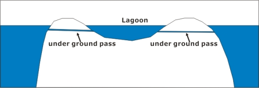
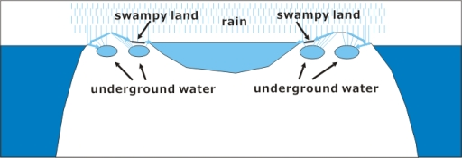
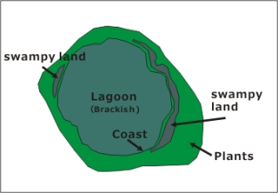
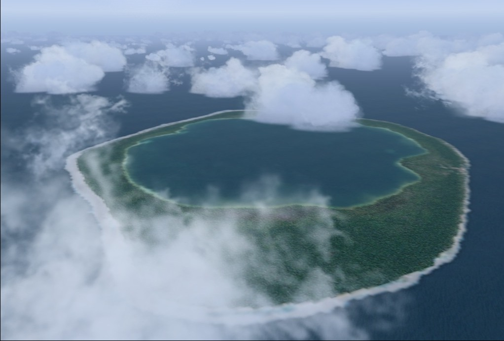

French Polynesia Tuamotu Archipelago FS9/FSX Addon Scenery
Group B
Niau
6 years ago, Dr. Angela Kay Kepler taught me many things about Niau. I wanted to correct the explanation of Niau immediately, but various things came together and I was unable to do so. Recently, I was able to get in touch with Dr. Angela (she was still doing well and continuing her research.). So I decided to revise Niau's explanation, following advice from her.

So far the description of Niau is as follows:
Niau is located at 60 km west of Fakarava. The atoll of Niau forms a complete ring and has a completely enclosed lagoon. The water color of the lagoon is green a little and it is said the water quality is hypersaline. The lagoon might be connected with the open sea underground. Otherwise, it seems that the lagoon dries up. Niau is a strange island.
When I designed the scenery for Niau, I thoughted the following things about Niau.
- The lagoon is connected to the open sea underground, so it has a high salinity.
- Then why is the lagoon green in color?
I asked Dr. Angela about them.
Case 1 - Dr. Angela replied as follow:
Lagoon water is brackish.
This means it is less salty than sea water.
Some fresh water is diluting the salt water.
This type of“lake”happens when you have an atoll that fills in with coral all around so there is has no connection to the ocean.
When there is no rain, the interior“lake”gets hypersaline, i.e. very salty.
However, I think Niau receives good rainfall,
which adds fresh water to the central lagoon making it brackish.
Eventually - in many thousands of years, this “lake” will be all fresh water and then it will disappear altogether.
There is no need to think that there is an underground connection to the sea
because what we have here at Niau is unusual but a normal process of evolution,
whereby the atoll is filling in to become an island with no lagoon.
If there was a connection to the sea,
the lagoon would be subject to tidal flow and
it would probably not be brackish - it would be salty like the ocean.

A case where the lagoon is connected to the open sea underground.

A case where the lagoon maintains its water level with moderate rainfall.
Case 2 - Dr. Angela replied as follow:
We have talked about this before.
The phosphate comes from large numbers of seabirds
- that are roosting and nesting in the trees - excreting (pooping!) lots and lots of guano,
which is full of nitrogen.
It's a similar situation to Mataiva and Tehuata.
Tons of guano seep into the lagoon and much of it stays under the trees too, to enrich the soil.
Phosphate is good for plants but not for coral growth.
The reason the lagoon is green is because it is high in nitrogen (from the seabird guano)
and this encourages lots of green algae.

Niau Topography
The response from Dr. Angela has forced me to believe that the Niau lagoon is brackish water with no connection to the open sea.
In addition, Dr.Angela provided valuable information.
1. The presence of kingfishers, endemic to Niau.
There is also an endangered bird there, living in the rare native forest ecosystem.
It is called the Niau Kingfisher (previously Tuamotu Kingfisher).
I am an ornithologist but I've never seen this tiny kingfisher.
It is very colorful, with blue, reddish, and lots of white feathers!
1. The presence of kingfishers, endemic to Niau.
There is also an endangered bird there, living in the rare native forest ecosystem.
It is called the Niau Kingfisher (previously Tuamotu Kingfisher).
I am an ornithologist but I've never seen this tiny kingfisher.
It is very colorful, with blue, reddish, and lots of white feathers!

Size of Niau based on Rangiroa

A strange atoll
